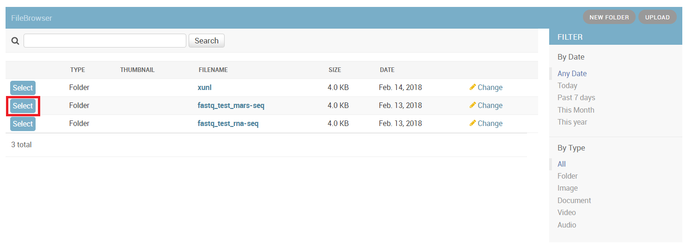
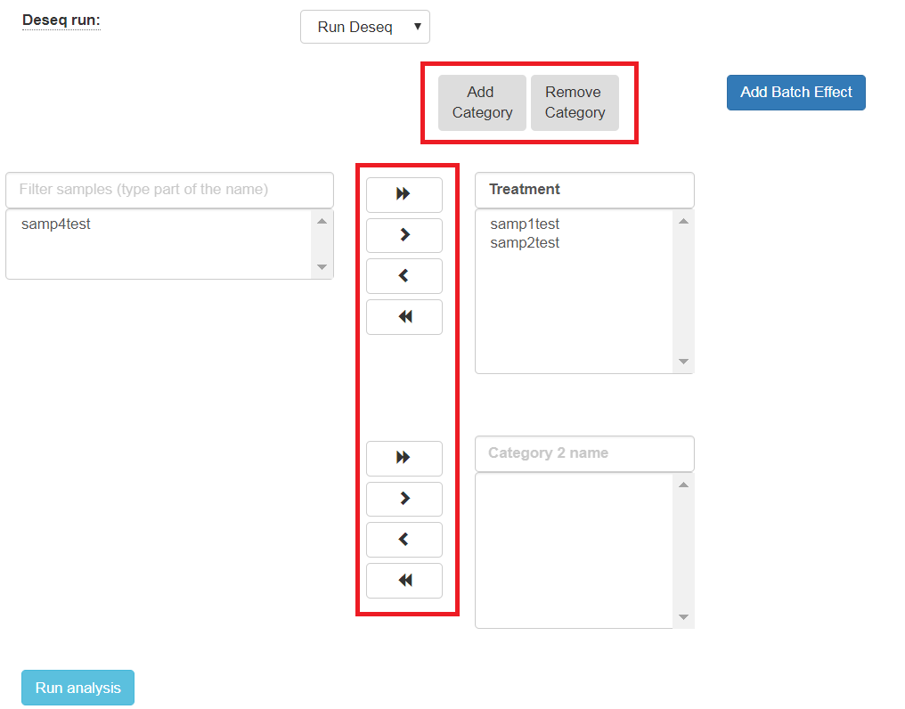

Run RNA-seq or MARS-seq pipeline¶
RNA-seq Analysis Setup¶
If your portocol is RNA-seq, you will get this screen:

If your portocol is MARS-seq, you will get this screen:

In input folder field, Browse within your directory structure as and Select the root folder for analysis. Note that if you wish to go up one level (or more) please click the desired folder level using the path at the top of the window.
Input folder must be in a correct format as was explained above. If there is an error with the folder you selected, you will be able to select it only after the error has been resolved.
If the output folder should be different from the one automatically filled in (based on the selected input folder), select the desired output folder.
Fill in the project name, then select the genome and annotation.
In RNA-seq protocol, select if your protocol is stranded (the sequenced reads saves the original strand of RNA fragments) or non-stranded.
Type your adapters on each read (R1 and R2). These adapters will be removed from the reads by the pipeline. You can leave the default adapters if you use with P5 and P7 adapters of True-seq protocol.
Select if you desire to identify differentially expressed using the DESeq2 package. If you selected this option, by default, two categories must be created (fill in the category names).

Choose the samples by selecting them and use the arrows to move them to the appropriate categories. You may add additional categories.
The order of the comparisons will be determined by the order of the category boxes, for example: DESeq2 will output "Treatment" vs "Control" comparison in case that user inserts the "Treatment" as the first category and the "Control" as the second.
If the samples were prepared in different batches, you can add this information: After moving the samples into category boxes, click on "Add Batch Effect" button, then select the samples from the category boxes that belongs to one batch and click on "Batch 1" button. Repeat the operation with the other batches. Be sure that the batch effect is designed correctly: DESeq2 doucumentation.

All steps of the pipeline (mapping, counts etc.) will be run on all samples, but Deseq will be run only on the samples with categories.
Finally, submit the run for analysis.
In the end of the run, an email will be sent to you informing of analysis completion.
Using in pipeline efficiently¶
If you want run only the step of Deseq several times on the same input folder (with other comparisons/batches), you have to wait to completion of the analysis, then you will see in "user dataset" screen a new button called "run again with other parameters". Then click on the this button and run again only the step of Deseq.
In this way, the analysis will do only the step of Deseq (a few minutes of running time) and no run again all steps of the pipeline.